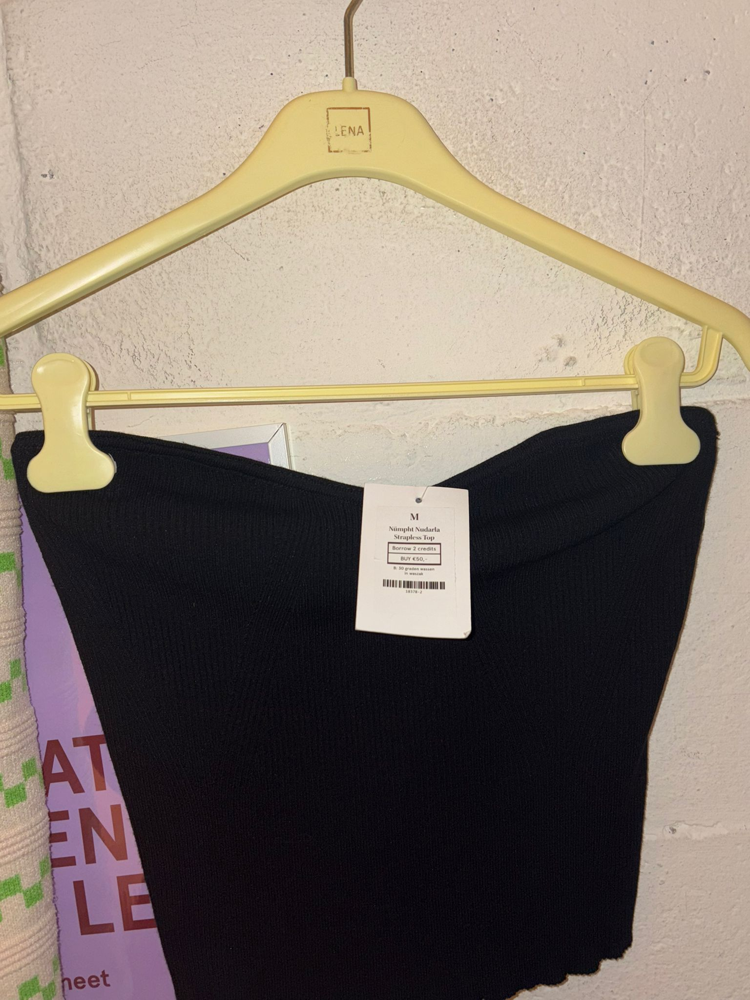
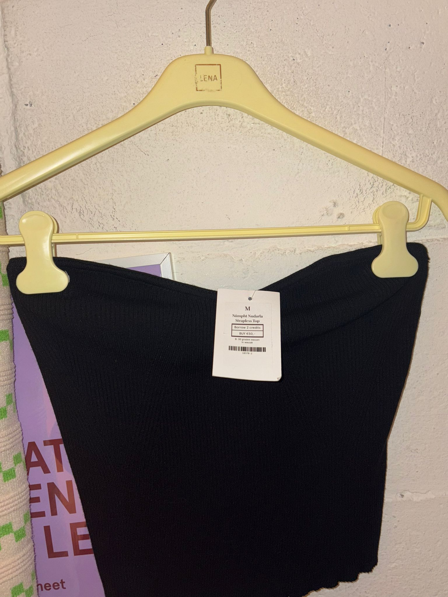

Lena the fashion library biedt het aan om kleding te lenen en dus niet te kopen. Mensen kunnen dan kleding lenen en na een bepaalde tijd terug brengen.
BETAALBAARHEID
U kunt bij Lena per maand,voor een vast bedrag, een aantal kledingstukken lenen. Hierdoor zult u zonder de kosten die normaal gesproken gepaard gaan met kopen van nieuwe items, toegang hebben tot een bredere selectie aan kleding van een hoge kwaliteit. U kunt bijvoorbeeld dure designersstukken dragen voor vele malen goedkoper.
VARIATIE EN STIJL
U kunt regelmatig bij Lena wisselen van kleding en stijl zonder dat u telkens iets nieuws hoeft te kopen. Zo voorkomt u een vollopende kledingkast!
DE MEEST GELEENDE KLEDING

 

MIJN ERVARING
Ik leen regelmatig kleding bij Lena the Fashion Library en ben daar erg tevreden over. De kledingstukken die ik tot nu toe heb geleend, waren altijd in uitstekende staat en van hoge kwaliteit.
Persoonlijk vind ik kleding lenen een geweldige oplossing: het is niet alleen handig, maar ook leuk. Mijn kledingkast loopt niet meer over van kleding die ik eigenlijk niet meer draag, omdat ik nu steeds nieuwe items leen bij Lena.
Het komt wel eens voor dat ik na een tijdje hetzelfde kledingstuk draag, en dan heb ik vaak zin in iets nieuws. In plaats van mijn kledingkast vol te stoppen met ongedragen kleding, hoef ik nu alleen maar iets te lenen. Dat is veel duurzamer dan het kopen van nieuwe kleding, die u vervolgens weer weg moet doen of probeert door te geven aan anderen (wat soms lastig is).
Lena the Fashion Library heeft mij geholpen om mijn kleding niet onnodig weg te gooien. In plaats daarvan leen ik nieuwe items, wissel ze af en kan ik steeds weer variëren, zonder dat ik mijn kast volstouw met dingen die ik niet meer gebruik. Dit vind ik een veel duurzamere en leukere manier van omgaan met kleding.